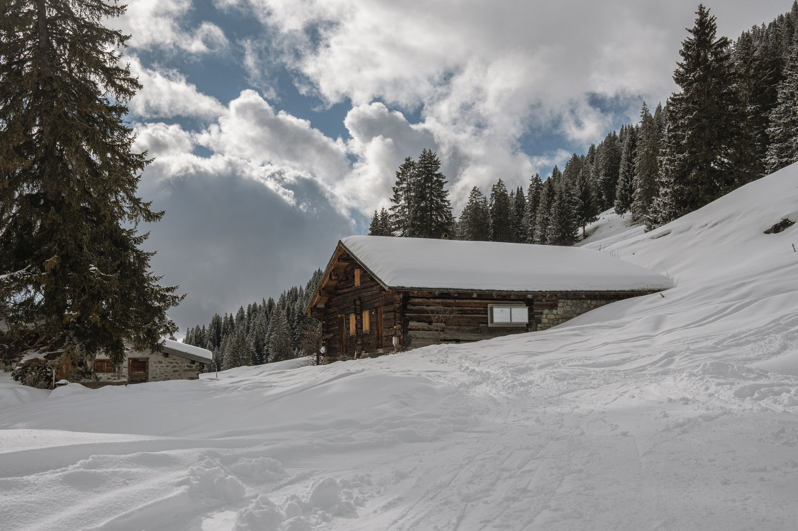

- Model
- Hemlock · 32 m²
- Site
- Wooded slope · Greensboro, VT
- Power
- 3.2 kWp ground-mount · 10 kWh
- Water
- Rain · 2,500 gal cistern
- Build time
- 26 weeks, visit to handover
- Final cost
- $138,500 (base $121,000)
Moss Hollow — off-grid, all year
The brief
A couple who work remotely bought 1.5 wooded acres with no power anywhere near it. The utility quoted $31,000 to run a line 900 feet. They wanted a year-round home, not a camp: two laptops, a fridge, a well’s worth of water pressure — and an honest answer about December.
The decisions
The cabin turned 12° off due south to face the one clearing, and the array went on a ground mount at the clearing’s edge, tilted at 50° for winter sun and snow-shedding — a roof array would have sat in tree shade until March. The wood stove carries all the heat, so the electrical budget stays small enough to be honest: a load audit put the house at 3.4 kWh a day, fridge included. The battery is 10 kWh usable, the generator inlet is wired and labelled, and the owners were told to expect it to run in a dark week. Groundworks found ledge at 30 inches on the uphill corner, which is where the extra $17,500 went — pinned piers instead of blasted ones.
The outcome
Moved in November 2024. First-year figures, from the system’s own log: 3,650 kWh generated against 3,410 kWh used; the generator ran 11 hours all winter, all of it in one grey fortnight. The owners’ verdict is on the home page, attached to this cabin, where it belongs.